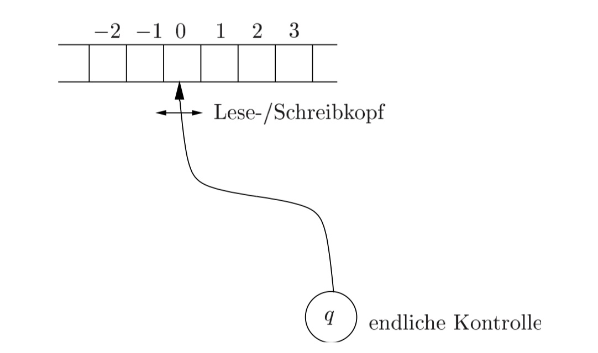

Turing-Maschinen
Die Registermaschine (RAM)
Die RAM besteht aus:
+ Ein Programm besteht aus einer Folge von Befehlen.
+ Programmzeilen sind durchnummeriert.
+ Der Befehlszähler b startet bei 1 und enthält jeweils die Nummer des nächsten auszuführenden Befehls.

- In den ersten Registern steht zu Beginn der Berechnung die Eingabe.
- In den übrigen Registern steht 0.
- Am Ende der Berechnung stehen die Ausgabedaten in vorher festgelegten Registern.
- Den Inhalt des Registers i bezeichnen wir mit c(i).
Kostenmodell der Registermaschine (RAM)
- Üblicherweise wird das uniforme Kostenmodell verwendet.
- Dabei kostet jede Programmzeile bis auf END eine Einheit.
- Dieses Modell ist gerechtfertigt solange keine großen Zahlen auftreten.
- Ansonsten ist das logarithmische Kostenmodell realistischer.
- Kosten entsprechen dann der Länge der benutzten Zahlen.
Die Turingmaschine ™
Eine TM besteht aus: + beidseitig unendlichen Eingabe- und Rechenband + freibeweglichem Lese-/Schreibkopf + endlicher Kontrolle 
Die Kontrolle: + ist immer in einem von endlich vielen Zuständen + entspricht dem Befehlszähler der RAM
Das Eingabe- und Rechenband + enthält eine Folge von Symbolen (höchstens eins pro Zelle) + entspricht den Registern der RAM.
Formale Definition der Turingmaschine
Eine deterministische Turing-Maschine ((D)TM) besteht aus: + Q, einer endlicher Zustandsmenge + Σ, einem endlichen Eingabealphabet + ¬, einem Blanksymbol mit ¬ !∈ Σ + Γ, einem endlichen Bandalphabet mit Σ∪{¬} ⊆ Γ + s ∈ Q, einem Startzustand + δ: Q×Γ → Q×Γ×{L,R,N}, einer Übergangsfunktion + F ⊆ Q, einer Menge von Endzuständen
Definitionen zur TM
- Eine Turing-Maschine akzeptiert eine Eingabe w ∈ Σ∗ , wenn sie nach Lesen von w in einem Zustand aus F stoppt.
- Sie akzeptiert eine Sprache L genau dann, wenn sie ausschließlich Wörter aus w ∈ L als Eingabe akzeptiert.
- Eine Sprache L ⊆ Σ∗ heißt rekursiv oder entscheidbar, wenn es eine Turing-Maschine gibt, die auf allen Eingaben stoppt und eine Eingabe w genau dann akzeptiert, wenn w ∈ L gilt.
- Eine Sprache L ⊆ Σ∗ heißt rekursiv-aufzählbar oder semi-entscheidbar, wenn es eine Turing-Maschine gibt, die genau die Eingaben w akzeptiert für die w ∈ L.
- Eine Funktion f:Σ∗ → Γ∗ heißt (Turing-)berechenbar oder totalrekursiv, wenn es eine TM gibt, die bei Eingabe von w ∈ Σ∗ den Funktionswert f(w) ∈ Γ∗ ausgibt
- Eine TM realisiert die Funktion f:Σ∗ → Γ∗ , mit f(w) = Ausgabe der TM, wenn sie stoppt order undefiniert sonst.
Entscheidbarkeit und Berechenbarkeit
Entscheidbarkeit von Sprachen und Berechenbarkeit von Funktionen sind verwandt: + Eine Turing-Maschine akzeptiert eine Sprache L, wenn sie genau auf den Eingaben w ∈ L in einem ausgezeichneten Endzustand stoppt. + L ist entscheidbar, wenn es eine Turing-Maschine gibt, die auf allen Eingaben stoppt und L akzeptiert. + Die Funktion f heißt berechenbar, wenn eine Turing-Maschine existiert, die f realisiert.
Church’sche These: + Die Menge der (Turing-)berechenbaren Funktionen ist genau die Menge der im intuitiven Sinne überhaupt berechenbaren Funktionen.